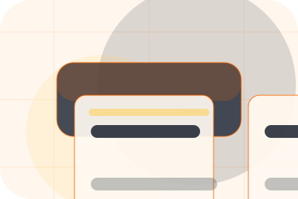
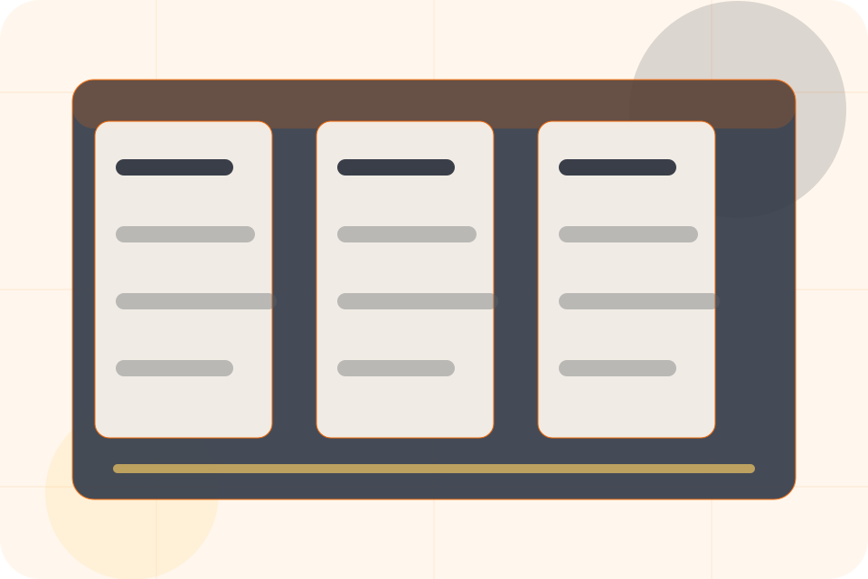
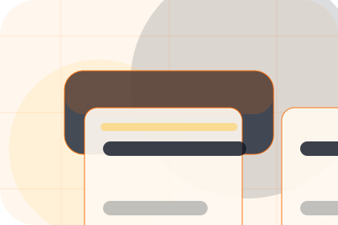
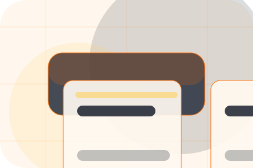
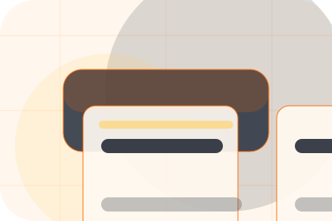
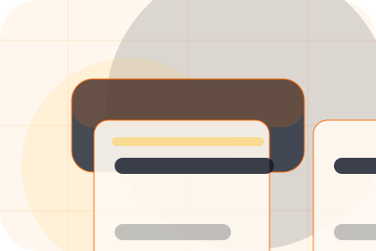
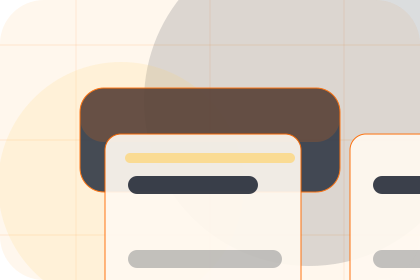
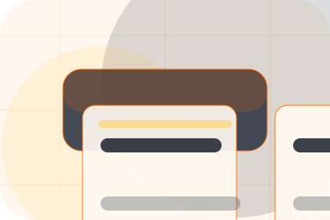
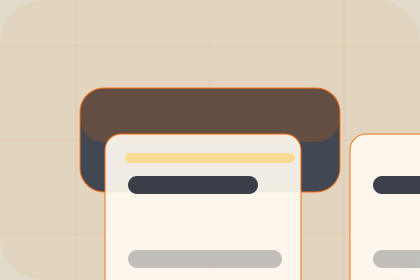

Context
Insurance gives the page a specific angle instead of repeating the navigation label.
Safety / 01
Safety opens as a clear construction decision hub: what Forge offers, who it helps, why it matters, and which route to take first.
The first screen combines positioning, proof, primary action, and fast internal navigation, so people can act immediately or compare the rest of the safety route with context.
Worksite software hero
Select the closest route and Forge keeps the next step, proof, and follow-up expectation aligned with certainty around cost and disruption.

Safety / 02
Site adds professional context to the safety route, using the construction platform grid structure to support certainty around cost and disruption before visitors choose a next step.
Forge uses project control cards and focused copy to make the decision easier to scan, aligning the section with certainty around cost and disruption rather than filling space.
Explore SafetyForge structures site around context, judgment, and a clear next route so visitors can compare the block quickly before they request an estimate.
Request EstimateSafety / 03
Insurance adds professional context to the safety route, using the construction platform grid structure to support certainty around cost and disruption before visitors choose a next step.
Forge uses project control cards and focused copy to make the decision easier to scan, aligning the section with certainty around cost and disruption rather than filling space.
Explore Safety
Insurance gives the page a specific angle instead of repeating the navigation label.

The project control cards show what to compare, what to avoid, and what matters most for construction, building & renovation visitors.

The final cue points to a useful internal route so the section keeps the journey moving.
Safety / 04
Compliance gives the proof layer for safety: standards, evidence, and reassurance that make the next decision feel grounded.
Instead of relying on vague claims, Forge presents visible standards, process cues, and proof artifacts that help construction visitors judge fit.
Explore SafetyVisible proof that helps visitors believe the claims behind compliance.
Safety / 05
Crew adds professional context to the safety route, using the construction platform grid structure to support certainty around cost and disruption before visitors choose a next step.
Forge uses project control cards and focused copy to make the decision easier to scan, aligning the section with certainty around cost and disruption rather than filling space.
Explore SafetyCrew gives the page a specific angle instead of repeating the navigation label.

The project control cards show what to compare, what to avoid, and what matters most for construction, building & renovation visitors.

The final cue points to a useful internal route so the section keeps the journey moving.
Safety / 06
Risks frames the pressure behind the visit, then connects it to a practical path visitors can recognise and act on.
The copy avoids blame and panic. It shows the common friction, the practical consequence, and the calmer route Forge uses to move people forward.
Explore SafetyRisks names the real friction visitors bring to the safety route, so the page feels relevant before any claim is made.
The copy connects that friction to practical risk, delay, confusion, or missed opportunity without exaggerating it.
The final cue moves visitors toward a clearer route instead of leaving them with the problem alone.
Safety / 07
Documents gives researching visitors a practical route into guides, checklists, and comparison material without leaving the site structure.
Each resource behaves like a useful internal link, giving cold and warm visitors a way to learn, compare, and return to the action path.
Explore SafetyA useful entry point for visitors who need more context before they request an estimate.
A scannable comparison aid that makes research usable before the next decision.
A route back to support, services, or contact when the visitor is ready to act.
Safety / 08
Cleanliness adds professional context to the safety route, using the construction platform grid structure to support certainty around cost and disruption before visitors choose a next step.
Forge uses project control cards and focused copy to make the decision easier to scan, aligning the section with certainty around cost and disruption rather than filling space.
Explore Safety

Cleanliness gives the page a specific angle instead of repeating the navigation label.
Safety / 09
Communication adds professional context to the safety route, using the construction platform grid structure to support certainty around cost and disruption before visitors choose a next step.
Forge uses project control cards and focused copy to make the decision easier to scan, aligning the section with certainty around cost and disruption rather than filling space.
Explore SafetyCommunication gives the page a specific angle instead of repeating the navigation label.
The project control cards show what to compare, what to avoid, and what matters most for construction, building & renovation visitors.
The final cue points to a useful internal route so the section keeps the journey moving.
Safety / 10
Forge closes the safety route with a clear action, a quick reminder of the value, and a low-friction way to request an estimate.
Visitors who are ready can use the primary action. Visitors who are still comparing can scan the section links, proof, and support routes before they request an estimate.
Request EstimateThe final block keeps the choice simple: act now, compare one more proof route, or send enough detail for a focused response.
Request Estimatecertainty around cost and disruption
A build-management site with construction CTAs, project panels, safety proof, and estimate routing. Safety ends with a direct path to request an estimate, plus enough context for visitors who still need to compare.

Request Estimate